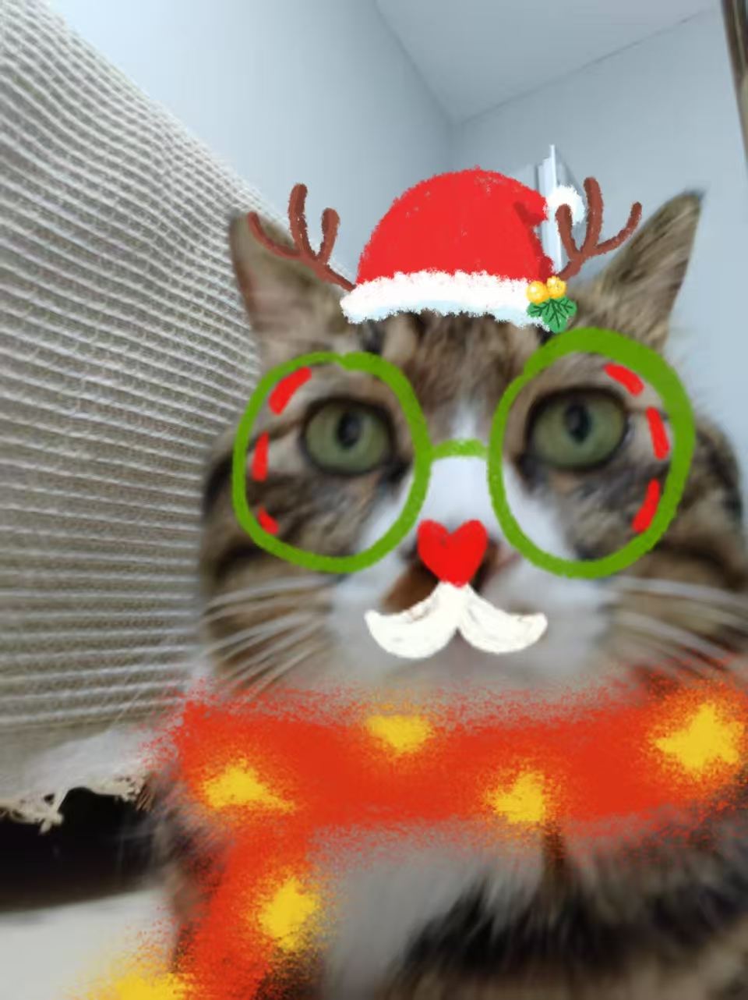

养猫日志 | 猫咪成长记录
记录每一天的温暖瞬间
猫咪档案

名字：
小狸
品种：
狸花猫
年龄：
未知
性别：
公（已绝育）
领养日期：
2025.11.12
性格：
？
最爱食物：
没有特别偏好
健康状况：
良好
2025.11.01 周六 ☀
意外的相遇
学校门口有人扔了一只猫，关在笼子里面，还放了食物和宠物用品，打了袋子上宠物店的电话号码，说捡到的人放在店里寄养了两天刚带走，但现在又扔在了校门口...
2025.11.14 周五 🌤
第一次一起睡觉
好不容易处理好事情，终于把小猫接回家了！这猫居然一点也不认生，只是刚来的时候对环境不太熟悉一直尝试探索，有点担心他会想要跑走......不过值得庆幸的是，他似乎并没有这个想法，并且才来第一天就钻被窝想要和我一起睡了...!
不过，其实我有点嫌弃
本月数据统计
14
日志记录
4.5kg
当前体重
32
互动时长(小时)
5
新增玩具
2025.11.23 周日 🌧
小狸住院
终于确定了名字、就叫小狸了。之前的病还没治好，是被弃养之前的遗留，开销特别大，差点去了那家特别黑心的宠物店......
2025.12.14 周日 ❀
同居的这段时间
从来没养过小猫，感觉他们的行为难以预测，虽然这段时间并不长，但也了解和学习到了很多；可惜我没有办法一直养这只小猫，真希望能早点找到一个合适的领养人，他一直在被抛弃...